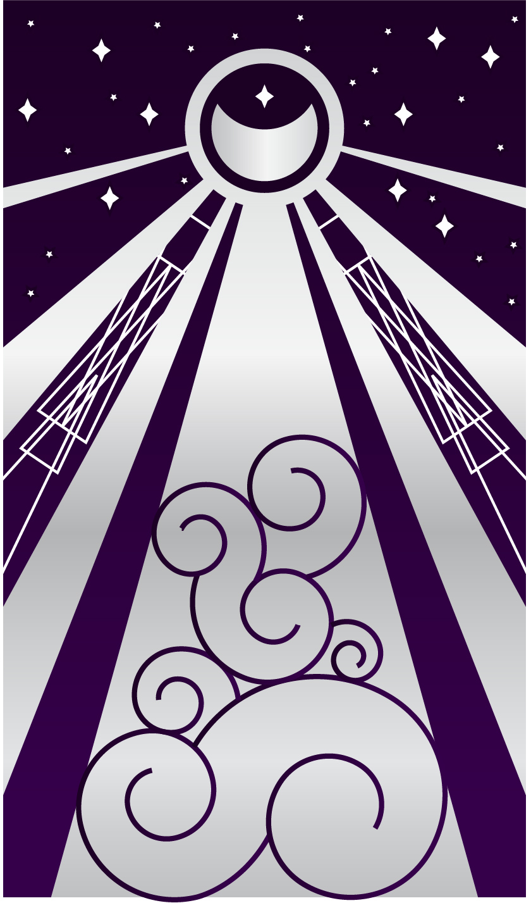

Anjali Suthar
Mystic Dreams
This is a digital image composition which is the first card I created for a tarot card deck, titled Mystic Dreams, which is currently in development.
This individial card, as you can see, is "The Moon." It features a geometric, symmetrical pattern which is balanced by asymmetry in the stars and the swirls of clouds at the bottom. Subtle gradients give a sense of shimmer. The moon can be seen as either a crescent or an eclipse, and this duality, along with the many meanings of what the moon represents, inspired the title.
There are multiple interpretations of The Moon. In many cultures the moon is a symbol of love, particularly forbidden love. It can mean mystery or deception, as many things go unseen under the cover of night. As the moon controls the tides, it can represent a journey as well. The moon, with its ever-changing phases, also signals a change or shift. This can be a personal change, change in lifestyle, or other interpretations of change.
Of course, these are not all ways The Moon card can be interpreted. When read with other cards in the deck, more meanings will present themselves.